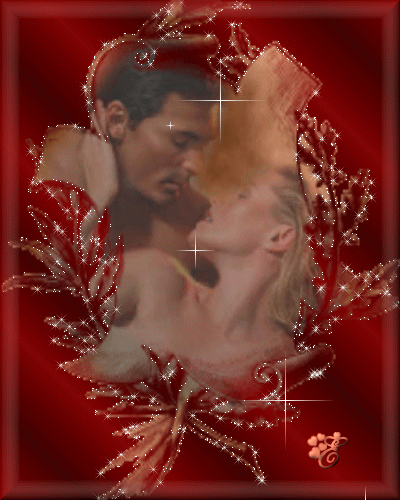
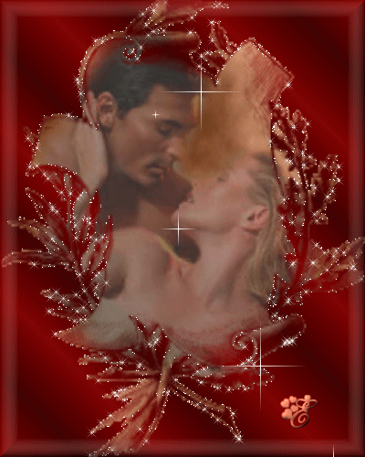
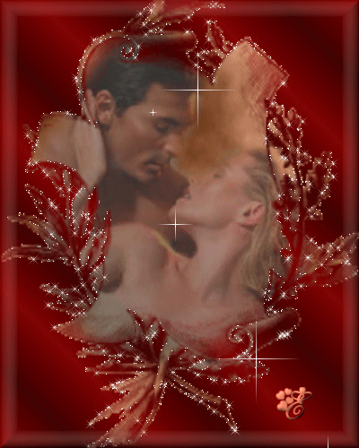

Made by
Seth Kranzler
THE FOURTH DAY
Being full eager to be able to distinguish immediately which of the youngsters in either sex was, in a depucelatory sense, to belong to each of their number, the friends decided to have them wear, regardless of their costume and, in that other extreme, even when undressed, a hair ribbon, which would indicate of whom the individual child was the property
Colors were thereupon chosen: the Duc adopted pink and green: whosoever should wear a pink ribbon to the fore, would be his by the cunt; similarly, whosoever wore a green ribbon to the rear, would be his by the ass
And so Fanny, Zelmire, Sophie, and Augustine straightway affixed a pink ribbon on one side of their coiffures; Rosette, Hébé, Michette, Giton, and Zéphyr attached a green favor to their hair where it fell toward the neck, this clue attesting the rights of the Duc enjoyed to their asses
Curval chose black for the front, yellow for the rear; thus Michette, Hébé, Colombe, and Rosette were in future constantly to wear a black ribbon forward; Sophie, Zelmire, Augustine, Zélamir, and Adonis pinned a yellow one above their nape
Durcet identified his Hyacinthe with a lilac ribbon hanging to the rear, and the Bishop, who owned title to but five assholes to be deflowered sodomistically, ordered Cupidon, Narcisse, Céladon, Colombe, and Fanny to wear a violet one in the rear
Never, regardless of the subject's posture, chore, or dress, were these ribbons to be neglected or improperly worn, and so it was that by this simple arrangement each friend was always able to tell at a glance what property was his, and in what way
Curval, who had passed the night with Constance, had bitter complaints to lodge against her in the morning
It was not entirely clear what lay at the root of the trouble, nor what precisely the trouble was; so little is needed to displease a libertine
But there was more than enough to the thing to cause him to have her listed for Saturday punishment, and he was formulating charges when that lovely creature declared that she was pregnant; Curval, apart from her husband the only one whom it was possible to suspect as the agent in this affair, had effected no carnal juncture with her save at the beginning of this party, that is to say, four days previously
Our libertines were gladdened by these tidings, seeing in the event much possibility of clandestine delight, and the Duc exulted over this stroke of fortune
In any event, the declaration earned her exemption from the punishment she would otherwise have had to undergo in return for having displeased Curval
She was to be spared: they preferred to leave the fruits on the branch to ripen, a gravid woman diverted them, and what they promised themselves for later on even more lewdly entertained their perfidious imaginations
Constance was dispensed from service at table, from
"chastisements, and from a few other little odds and ends the accomplishment of which her state no longer rendered voluptuous to observe, but she was still obliged to appear upon the couches and until further orders to share bed of whoever wished to choose her for the night"
It was Durcet who, that morning, contributed his presence to the pollution exercises, and as his prick was extraordinarily small, he gave the pupils rather more a problem than had been posed by the Duc's massive construction
However, they fell earnestly to work
But the little banker, who had been plying a woman's trade all night long, could never bear a man's
He was adamant, intractable, and the skill of these eight charming students combined with that of their deft instructress was unable, when all was said and done, even to get him to raise his nose
He left the classroom in triumph, and as impotence always provokes that kind of mood called a teasing one in the idiom of libertinage, his inspections were astonishingly severe
Rosette amongst the girls, Zélamir amongst the boys were the victims of his thoroughness: one was not as she had been told to be—this enigma will be explained—the other, unfortunately, had rid himself of what he had been ordered to keep
""
Those present at the public latrines were only seven in number: Duclos, Marie, Aline, and Fanny, two second-class fuckers, and Giton, Curval, who did considerable stiffening that day, grew very excited over Duclos
Dinner, at which his conduct and remarks were very libertine indeed, calmed him not one whit, and the coffee served by Colombe, Sophie, Zéphyr, and his dear friend Adonis, set his brain all afire
He laid hands on this selfsame Adonis, tumbled him onto a sofa, and while spewing forth oaths slid his enormous member between the lad's thighs (approaching him from behind), and as that outsized tool protruded a fair six inches beyond, he commanded Adonis vigorously to frig what emerged, and himself set to frigging the boy above the morsel of flesh upon which Adonis was spitted
"Meanwhile, he presented the assembly with an ass no less filthy than broad, whose impure orifice began to exert a potent attraction upon the Duc"
Seeing this ass within reach, he trained his vivacious prick on the hole while continuing to suck Zéphyr's mouth, an operation he had begun before this new idea had occurred to him
Curval, who had not been expecting such an attack, emitted blasphemous paeans of joy
He danced with delight, spread himself wider, braced himself; at the same instant, the fresh young fuck of the charming boy he was frigging started to drip out upon the enormous head of his own aroused instrument
That warm fuck he feels wetting him, the reiterated blows of the Duc who is also beginning to discharge, it all quickens his warrior's soul, the weapon is primed, off goes the gun, floods of foamy sperm splash against Durcet's ass, for the banker has just posted himself there within easy range lest, says he, something be wasted, and Durcet's plump white buttocks
are submerged beneath a spellbinding liquor he would have by far preferred as a rinse for his bowels
""

Nor was the Bishop idle; he was one after the other sucking clean the divine assholes of Colombe and Sophie
But doubtless fatigued by some nocturnal exercise, he showed not one spark of life, and like all other libertines rendered unjust by caprice and disgust, he lashed out furiously against these two delicious children, blaming them for the only too well merited shortcomings of his debilitated frame
Messieurs nap for a few minutes; then 'tis story-telling time, and in they troop to listen to the amiable Duclos, who resumes her tale in the following manner: There had been a few changes in Madame Guérin's house, said our heroine
Two very pretty girls had just found dupes who were only too willing to keep them and whom they deceived just the way we all do
To fill the gaps in the ranks, our dear mother had scouted around and set her sights upon a rue Saint-Denis tavern-keeper's daughter, thirteen years old and one of the most fetching creatures in all the wide world
But the little lady, quite as well-behaved as she was pious, was successfully resisting all enticements when Guérin, having one day employed the cleverest stratagem to lure her to her house, immediately put her in the hands of the unusual person whose mania I propose to describe next
He was an ecclesiastic of fifty-five or fifty-six, but so youthful and vigorous you'd have thought him under forty
No man in Europe had such a singular talent for drawing young girls into vice, and as it was his one art, developed to a sublime degree, he had turned it into his one and only pleasure
The whole of his fleshy delight consisted in extirpating childhood prejudices and unnatural terrors, in cultivating scorn for virtue, in decking vice in the most dazzling colors
"He neglected nothing: seductive images, flattering promises, delicious examples, he would press everything into service, everything would be brilliantly manipulated, his artistry being faultlessly attuned to the child's age and cast of mind, and never did he miss the mark"
Granted a mere two hours of conversation, he was sure to make a whore of the best-behaved and most reasonable little girl; for thirty years he had been conducting his missionary labors in Paris, and, he had once assured Madame Guérin, who counted herself one of his best friends, he had to his credit more than ten thousand girls whom he had personally seduced and plunged into libertinage
"He rendered similar services to at least fifteen procuresses, and whenever he was not coping with a particular problem at someone else's behest, he was busy doing research for its own sake and for his professional pleasure, energetically corrupting whatever he came across and then packing it off to his outfitters"
Now, the most extraordinary aspect of the entire thing, and the one which, Messieurs, prompts me to cite the example of this uncommon individual, was that he never enjoyed the fruit of his labors
He would encloset himself alone with the child, but, despite his vast understanding, his mind's agility, his eloquent persuasiveness, he used always to emerge from conference greatly inflamed
One could be
"perfectly certain the operation irritated his senses, but it was impossible to discover where or when or how he satisfied them"
Closest scrutiny had never revealed anything but a prodigious blaze in his stare when once he had concluded his speeches, a few twitching movements of his hand upon the front of his breeches, within which one could tell there was a definite erection, produced by the diabolic work he was doing; but that was all
He came to the house, was accorded a private interview with the young barmaid, I watched the proceedings: the consultation was prolonged, the seducer's language was amazingly pathetic, the child wept, got hot, seemed to enter into a kind of enthusiastic fit; it was at this moment the orator's eyes flamed brightest, and it was now we remarked the gestures in the neighborhood of his fly
Not long afterward, he rose, the child stretched forth her arms as if seeking to embrace him, he kissed her in a grave and fatherly manner, without any trace of lechery
He left, and three hours later the little girl arrived with her baggage at Madame Guérin's
"And the man?" asked the Duc
"He disappeared once his sermon was over," Duclos replied
"Without coming back to see the results of his work?"
""No, my Lord, there was no doubt in his mind"
"He had never once failed"
"
"Now there is a most extraordinary personage," Curval admitted
""What does your Grace make of it?""
"I suspect," the Duc answered, "that the seduction provided all the heat necessary and that he discharged in his breeches
"
"No," quoth the Bishop, "I think you underestimate the man: all this was simply by way of preparation for his debauches, and upon leaving I wager he went off to consummate greater ones
"
"Greater ones?" cried Durcet
""And what more delicious, more voluptuous delight could one hope to procure oneself, than that of enjoying the object one creates?""
"I have it!" spoke up the Duc, "I dare say I've found him out: all this, just as you say, was merely preparatory in character, corrupting girls would heat his imagination, the off he'd go to dip his tool in boys
I'll wager he was a bugger, yes, 'tis plain
"""
Duclos was asked whether she had any evidence to support that conjecture, and did he or did he not also seduce little boys? Our narrator replied that she had no proof of the thing, and despite the Duc's exceedingly likely allegation, everyone remained more or less in suspense as to the character of that strange preacher; after it had been unanimously agreed that his mania was truly delicious, but that one had either to consummate the work or do worse afterward, Duclos went on with her story:
"The day after the arrival of our young novice, who was named Henriette, there came to the establishment an eccentric old lecher who put us both, Henriette and I, to work at the same time"
""
This latest libertine had no other pleasure than that of observing through a hole all the voluptuous activities transpiring in an adjoining room, he adored spying on them, thus found in others'
pleasures the divine aliment of his own lubricity
"He was installed in the room I mentioned to you, the same one to which I and my companions often repaired for the diversion of watching libertines in action"
"I was assigned the task of amusing him while he looked through the hole, and young Henriette entered the arena together with the asshole-sucker I described you yesterday"
The management considered that rascal's very voluptuous antics just the kind of spectacle my onlooker would relish, and in order better to arouse the actor, and in order that he render the scene yet more lascivious and more agreeable to see, he was told he was being given an apprentice and that it was with him she was to make her debut
"The little barmaid's air of modesty and childishness speedily convinced him of it; and so he was as hot and as lewd in his nasty stunts as 'twere possible to be; nothing could have been further from his mind than that he was being observed"
As for my old buck, his eye glued to the hole, one hand on my bum, the other on his prick, which he gently agitated, he seemed to be keeping the progress of his ecstasy abreast the one he was watching
"Ah, what a sight!" he said now and again; "what a fine ass that little girl has, and how well that bugger in there is tonguing it
" At last, Henriette's lover having discharged, mine folded me in his arms and, after a moment's kissing, he turned me over, fondled, kissed, lewdly licked my behind, and squirted evidence of his virility over my cheeks
""While frigging himself?" the Duc asked"
"Yes, my Lord," answered Duclos, "and frigging a prick whose incredible littleness, I assure you, isn't worth the bother describing
"
The gentleman with whom I had to do next, Duclos continued, would not perhaps deserve to be included in my report were it not for one element, a rather unusual one, I should say, which distinguished his otherwise quite routine pleasures, and this little circumstance will illustrate to what point libertinage is able to degrade all a man's feelings of modesty, virtue and decorum
This person did not want to see; he wished to be seen
Knowing that men exist whose whim it is to spy upon the pleasure-takings of others, he bade Guérin find him one such fellow, conceal him, and said he would enact a drama for him
Guérin at once got in touch with the man I had entertained a few days previously behind the partition, and without telling him that the performer he was about to see knew that he was going to be seen—this would have interfered with his passion's fulfillment—she gave him to believe he was to observe a very arcane mystery indeed
The inspector and my sister were put in the room with the hole, the actor and I went into the other one
He was a young man about twenty-eight years old, handsome and strong
Informed of the hole's location, he not too pointedly moved to where he could be perfectly viewed and had me take my place beside him
I frigged him
When his prick held a good slope, he got to his feet, exhibited his tool to the inspector, turned around, displayed his ass, raised my skirts and showed my mine, knelt before me, teased my anus with the tip of his nose, spread heartily, displayed everything with as much thoroughness as delight, and discharged by frigging himself, the while keeping my hinder skirts high and my ass squarely opposite the spy hole, in such wise that he who stood posted on the other side of the wall simultaneously beheld, at this decisive moment, both my bum and my lover's wrathful device
If the latter was in seventh heaven, God knows what was going on in the next room; my sister later told me she had had a madman on her back who had sworn he'd never had as fine a time as this, and after that her buttocks had been washed by a tide no less fierce than the one that had burst over mine
"If that young man of yours truly had a good prick and pretty ass," Durcet opinioned, "there was ample in the situation to provoke a generous discharge
"""
"It must then have been delicious," returned Duclos, "for his engine was very long, quite thick, and his ass as soft, as sweetly plump, as attractively formed as the god of love's
"
"Did you spread his cheeks?" the Bishop inquired
"Did you show his vent to the inspector?"
"Yes, your Lordship," said Duclos, "he displayed mine, I displayed his, he presented it with incomparable suggestiveness
"
"I've been witness to a dozen such scenes," Durcet announced, "which have cost me a fortune in
fuck; there is nothing more delicious to see or do
"I refer to both: for it is just as pleasant to spy upon someone as to want to be observed"
"
Another individual, with approximately the same tastes, Duclos went on, took me to the Tuileries some few months later
He wanted me to accost men and frig them six inches from his face while he hid under a pile of folding chairs; and after I had frigged seven or eight passers-by, he settled himself upon a bench by one of the most frequented of the paths, lifted my skirts from behind, and displayed my ass to all and sundry, put his prick in the air and ordered me to frig it well within view of half of Paris, the which, although it was night, created such a scandal that by the time he most cynically unleashed his fuck, more than ten people had gathered around us, and we were obliged to dash away to avoid being publicly covered with shame
When I related this adventure to Guérin, she laughed approvingly and said she had once known a man in Lyon (where panders enter into the trade at an early age), a man, I say, whose mania was certainly just as unusual
He would disguise himself as a public mercury, himself fetch in visitors to dally with the two girls he paid and maintained for no other purpose, then he would conceal himself in a corner to watch his client go to work; the girl, whose hire depended upon her skill in these moments, would guide the libertine she had in her arms and unfailingly give her employer a view of his prick and ass, the sight of which constituted the one pleasure that agreed with our false pimp's palate, the one that was able to loosen his fuck
Duclos having brought her recital to an early conclusion that evening, the time that remained until supper was devoted to a few choice lubricities, and as the example of the cynic had fired their four daring brains, the friends did not isolate themselves in their closets, but disported within clear view each of the other
"The Duc had Duclos strip off her clothes, had her bend and lean upon the back of a chair and commanded Desgranges to frig him upon her comrade's buttocks, in such wise that the head of his prick might graze Duclos' asshole with each stroke"
To that one was added a number of other episodes which the proper presentation of our material forbids us from disclosing at this stage; but the fact remains that the chronicler's inferior vent was completely sprayed and that the Duc, handsomely served and entirely surrounded, discharged to the tune of bellowings and shouts which indicated to what a point his mind has been stimulated
Curval had himself fucked, the Bishop and Durcet for their part did passing strange things with both sexes; then supper was served
After it, dances were held: the sixteen youngsters, the four fuckers, and the four wives were able to perform three quadrilles, but all the participants at the ball were naked, and our roués, indolently reclining upon sofas, were deliciously amused by all the different beauties one after
another offered them by the divers attitudes the dancers were obliged to strike
Messieurs had the storytellers at their side, and these ladies manualized them rapidly or slowly, depending upon the pleasure they were experiencing; but, somewhat fatigued by the day's frolickings, no one discharged, and each went to bed to acquire the strength needed for all the following day's new infamies


 
